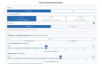
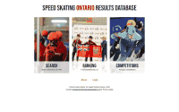
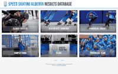

I'm Emil.
Here's what I work on.
Speed Skating
Research
Websites
Personal
Speed Skating
Personal records
Every race
Websites
https://www.powercalc.ca

https://www.results.ontariospeedskating.ca

https://results.speedskatingalberta.ca

Or, just click here for my CV.